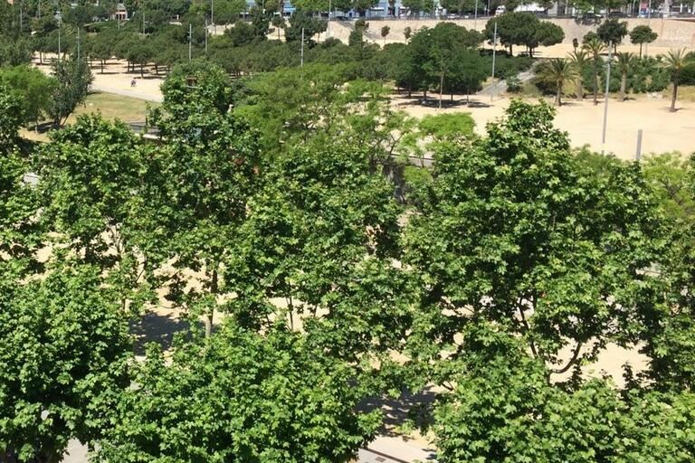

Visita · Mataró
El Nou Parc Central, situat al centre geogràfic de la ciutat, és un dels principals pulmons verds de Mataró i s'ha convertit en lloc indispensable per a l'oci, les passejades, el lleure infantil i…